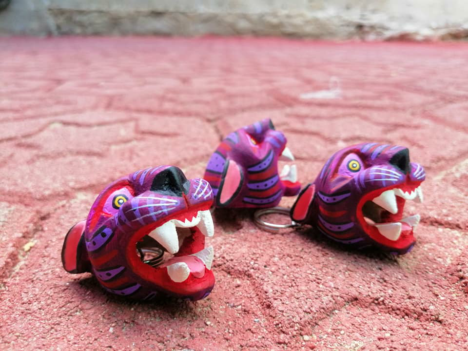
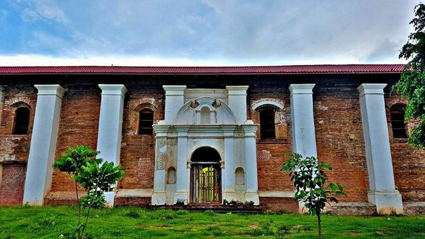
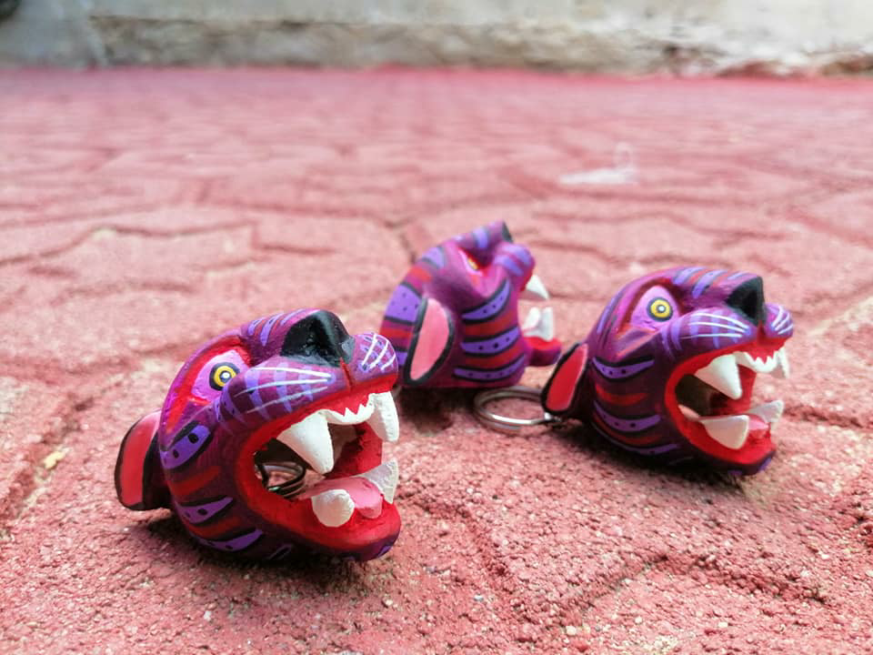
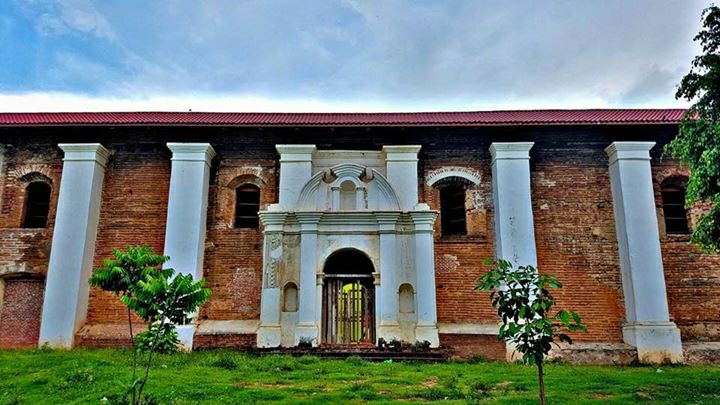

Fiestas y Costumbres
Una de las costumbres de la comunidad es el pedimento de lluvia el donde la comunidad se reúne en el templo católico para ir a "Cerro Grande" para hacer una oración y agradecr a Dios, este ritual se ha llevado a cabo desde tiempos prehispánicos en donde participan indígenas negros y mestizos. La otra costumbre es ir a recoger las ánimas (almas) del panteón municipal y llevarlas a la iglesia para que los muertos puedan reunirse con sus familiares, llevándolas de nuevo al panteón el día 2 de noviembre.
En cuanto a las festividades, existen dos cuyos eventos son anuales: el primero es el inicio de la cuaresma o primer viernes en donde junto con el carnaval tradicional la comunidad celebra la primera semana de cuaresma.
La otra festividad anual se celebra el día 15 de agosto en honor a la Virgen de la Asunción (patrona de la comunidad).
La comunidad también celebra fiestas religiosas como Navidad, Día de muertos, Día de Reyes, Semana Santa, entre otros
 



Toponimia
La lengua principal de este lugar era el mixteco, y su nombre en este idioma es Ñuu Tye'nde ( Ñuu, es tierra o pueblo y Tye'nde es guajolote, Tierra de guajolotes).
Sin embargo la conquista, y la posterior colonización española, muchos nuevos enclaves recibieron topónimos basados en el español y a otros se le añadieron al nombre prehispánico algún antropónimo español. ("Santa María de la Asunción" en el caso de esta población).
Los españoles se sirivieron ampliamente de hablantes de náhuatl para sus propósitos, por lo que el náhuatl se convertiría en lengua franca de la región, usandose en topónimos de nueva creación o para renombrar a los pueblos ya existentes, que tenían el nombre en otra lengua mesoamericana distinta al Náhuatl.
Huazolotitlán es un ejemplo de topónimo de origen náhuatl, en un lugar donde antes de la conquista no se habló náhuatl o no era la lengua principal, ( "Lugar de Guajolotes", etimología "Huexlotl": guajolote y "Titlán": lugar de).